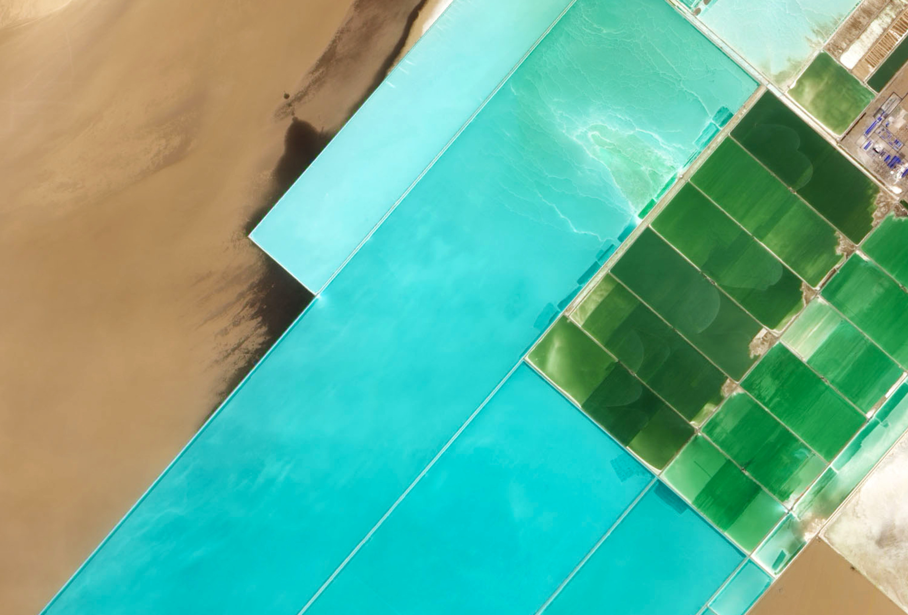
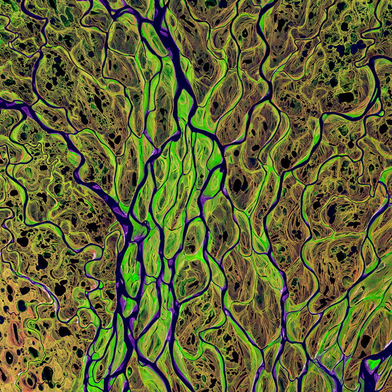
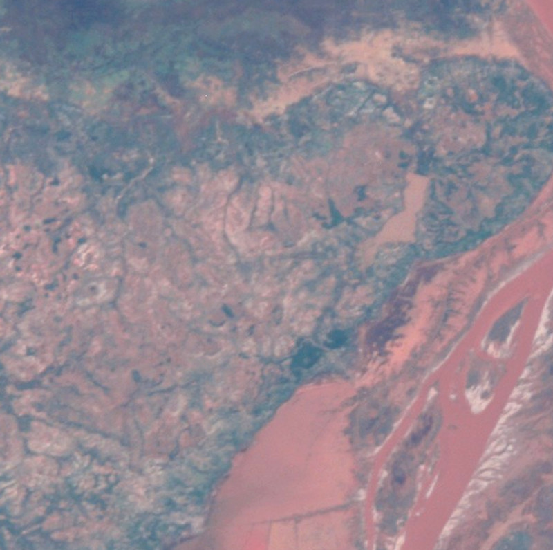
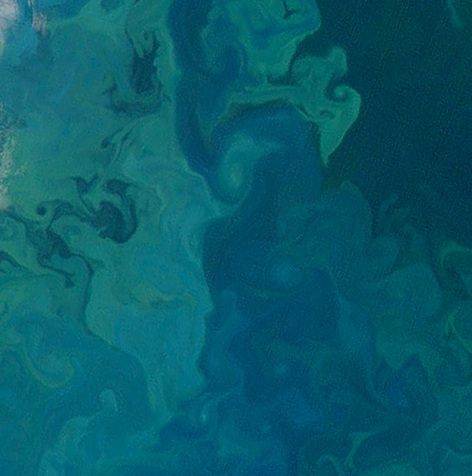
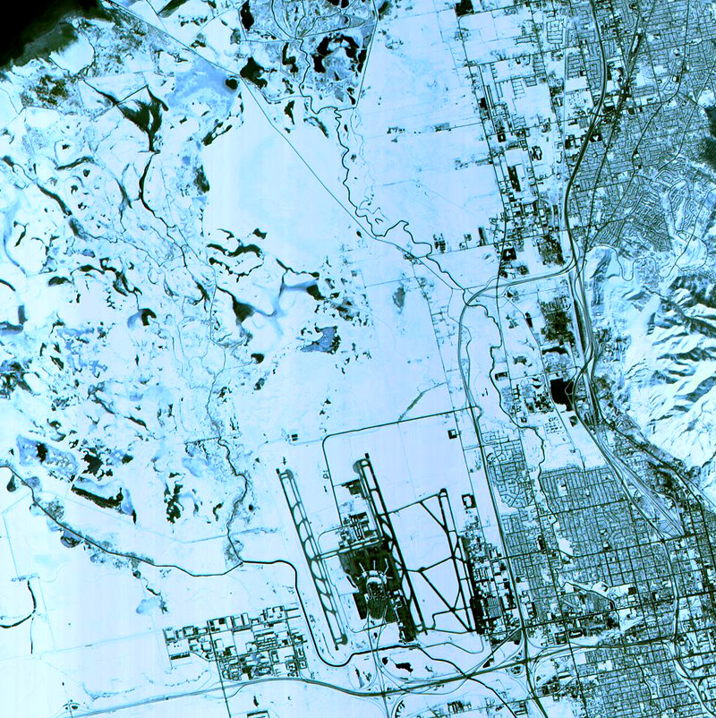

Overview · Architectural colour
OV‑114
Lop Nur Turquoise
40.4°N · 90.6°E
Potash pans, Xinjiang
Sampled at 705 km
Matt · eggshell · exterior
Every colour in the range is matched from a photograph nobody took for us. We have never mixed a new one and we do not intend to. Delivery to the Xinjiang region is not offered, for reasons of distance.
Four more. None of them mixed.
The range is a list of places. It grows when somebody flies over something better.
OV‑207 Delta Green72.4°N 126.7°E
Lena Delta, Siberia

OV‑031 Betsiboka15.9°S 46.3°E
Estuary, Madagascar

OV‑088 Bloom Teal74.2°N 36.1°E
Barents Sea

OV‑002 Salt White41.0°N 112.3°W
Great Salt Lake, Utah
Photography: NASA / GSFC / JSC, public domain. Landsat and ISS crew Earth observations. Overview is a fictional brand; this is not an advertisement for anything you can buy.